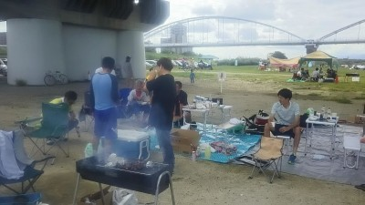

おかちゃんの嫁です～(^з^)-?
日曜日は楽しいBBQありがとうございました～
皆さんいい人ばかりで、とても楽しかったです～
BBQに来ていた人はみんないい人で誰に抱かれてもいいと思ってます！
でも、まっさんだけは、お断りします<(_ _)>
日曜日はちょっと気になってる男性との約束があるので見学行けません（?*_*?）
って言ってました～
日曜日は今練習中のネオタイガーシュートを披露したいです(^^♪
今から波に向かってシュート練習してきます～

いい天気だったねーっていうか暑すぎたくらいでした。
朝に練習場所とBBQ場所の確保に早めに行きましたが、結構な人が来て場所取りしてましたね。
まずは練習報告。練習はいつもと違う通称？レッドブル広場でしました。合計１４名の参加があったので最初は鳥かごでUPして、その後は早めに終わるのでミニゲを延々としましたっていつもと変わらんなあ。
結構、広めで取っていたのでサイドを使った攻撃とかあったりで良かったですね。
なかやん（BBQ参加少しだけと言ったのにいつのまにかおらんかった不届きもの（笑））劇場があってヘディングやらシュートとかいい動きしてたけど、ゆっきーに駄目出ししてたのをあしらわれていたのがおもろかった。
そのゆっきーもいい動きで躍動してたけど、ことごとくタカさんに取られて「誰かタカさんをどっかにやってくれー」って叫んでた。気持ちはわかるよ。でも最後はタカさんが戻る前にゴールをねじ込んでましたね。
ほっしゃんも得点を連続で入れたり果敢に攻めてましたし、ぶっちとかもサイドからの起点でいい動きしてました。テラさんがコスいシュートを狙ったり、ごろうが絶叫したりはいつものこと。（笑）
一番印象に残ったプレーはまえちゃんからの縦パスをたかさんが中に切れ込んでダイレクトで受けてそのままゴールを決めたのが良かったっす。
個人的にはゆっきーからのワンツーをダッシュしながら足元にピタッと止めてそのままドリブルしてゴール決めたまぐれがあったのと、まっとんへのダイレクトクロスが良かったくらいで、後はボロボロ、何回外したんだろうって自己嫌悪（涙）
まあ、練習は覚えているのはこれくらいでした。参加された皆さん、お疲れ様でした。
んで、ある意味メイン？BBQ報告でっス。
参加者は８名とテラさん絶賛のにゃんこかぶってる？マネージャー候補？、っていうか「リーダーさん」ってオカちゃん、わけわからん呼び名教えんな（笑）の９名でしました。
この後、暗くなったら道具片付け頑張るよ。
まあ、まずびっくりしたのが買いだしで、BBQにニンニク、サンマ、マショマロって・・・、初めてやったわ（笑）。ゆっきーの暴走が酷かったなあ＼(◎o◎)／！
結局お酒とかちょっと余って持って帰ってもらったけど、量の割には安くてさすが業務スーパー、肉の差し入れしてくれたむらっちもありがとねー。
炭とかも無事使えて良かったっす。１００均の着火剤がちょっとだったかな？バーナーと自動送風機が大活躍でした。
まあ、お酒飲みながらいろいろお話ししてたけど、おかちゃんがみんなから攻められまくってた、特にゆっきーからがおもろかった。バスケ対決するの？おかちゃんが８０％勝つって豪語してたから、結果が楽しみやわ（笑）
まあ、今日のBBQの中で際立ってたというか再認識したのは、ごろうの極悪ぶりと、スーパーダークテラーがえげつないことやな。いい人っぽく見えるけど実際は酷いな((´∀｀))ｹﾗｹﾗ
まあ、それに変わらんくらい、ハマさんもたいがいだったし、まえちゃんも酔っているからかどうかわからんくらいハマさんやごろうにかみついてた（笑）
そんな状況の中、BBQ奉行してくれてたむらっちに感謝です。
楽しく１６時くらいまで食べて飲んでサッカーのこととかも熱く語ったりで楽しい時間を過ごせました。今日も圧迫メールとか酷いこと言われたけど、まあその圧迫メールを乗りこえて、縁があって一緒に楽しくサッカーして、一緒にＢＢＱ出来るメンバーには感謝です。リーダーなんてがらじゃない、ポンコツいじられ役のフォローも今後もよろしくでっす。
んで１６時くらいになって片付け始めようとしてたら事件が・・・、散々オカちゃんとかほかの参加者を爆撃していたゆっきーが爆睡。片付け終わりかけでまえちゃんが蹴り入れてた（笑）、でもそれまで誰もねえ、そこがうちのメンバーの優しさなんだろうなあ。
男だらけの中で参加して場を楽しくしてくれて、調理とか片付けまでしてくれたおかちゃんの奥さんありがとうね。良かったらおかちゃんの代わりに感想待ってるよ。誰が一番えげつないかランキング待ってます（笑）、おかちゃんは今日の主役なのでBBQ活動報告強制（笑）
まあ、そんな感じの一日でした。両方とも参加された皆さん、本当にお疲れ様でした。
来週は試合です、まだ人数が少ないので早めに参加できる人は出席確定をお願いします。うちからお願いしておいて人数が足りないなんて恥さらすことは出来ないのでご協力をお願いします。もしかしたらおかちゃん奥さん友達が応援に来てくれるかもよ（笑）
だっるー。久々の活動報告やん。３週間空いたら動けんな（涙）
今日は合計で１３名の参加がありました。いきなり紅白戦にはちょっと少なかったので、最初は鳥かごでUPして、その後はポストシュート、その応用で左右にポストマンを配置して、真ん中に来たこぼれ球をシュートって感じの練習もしましたが、まんちゃんがいいセービングをしてました。テラさんもいいシュート打ってましたね。
その後は中央からサイドにボール蹴って、ゴール前に走って行って、サイドはその動きに合わせてセンタリング上げる練習もしました。
シュート練習もセンタリングからの練習もたまにはするのは必要だと思いました。
んで、その後はいつも通り、ミニゲ。個人的にはなかやんがしつこく追い掛けてきたのでくたびれました。ほんま体力無くて、心臓がずっとバクバクいってたよ。
今日のハイライトは、休憩中にシュート練習でオカちゃんがボールを持ってセットした時に、休憩中のメンバーから越えへｋｋな？大丈夫か？との声が、その後、予想通りはるかかなたのBBQ楽しんでいるところまでボールが飛んで行った（笑）
まあ、そんな感じでした。
来週は試合です、来週以降も、予定をなるべく早めに立ててますので、早めに登録確定の対応をお願いします。
本日参加された皆さん、お疲れ様でした。
今日は昨日の雨の影響で水たまりが結構あるかなって思って、早めに現地について視察してたけど、結果的に少しはあったけど、あんまり影響の無い所でいつもの場所で出来て良かったです。
久々の参加のリューゾーも含めて１４名の参加がありました。最初は鳥かごでUPして、それからはミニゲをしました。暑さが残ってましたが、時折吹くそよ風と癒しの木のおかげでええ感じで過ごせました。
ミニゲはいつも通りな感じで楽しくしてました。
ヤスさんのスーパーウルトラ超絶摩訶不思議シュートが炸裂したり、ぶっちがコーナーキックでいいボールをあげまくってて、うち一つは直接決まった？前線でもいい感じでスペースに走りこんでくれました。
その中でコーナーからの強烈なヘディングシュートがトクさんの喉にジャストミートしてトクさんくたばりました（笑）、反対に「珍」プレーもあったしね（笑）
トクタンクの攻撃力は凄いっすね。ほんとスペインの闘牛のように片足を振り上げながら突進してました。その攻撃を受けながらも耐えていたわだっちの体幹も素晴らしいっすね。
ちょっとぶりの参加かな？むらっちもバックラインからいい感じのパスをいっぱい出していたし、久々のフル参加になったつよぽんも楽しそうにしてました。ていうか最後まで僕とぶっちとつよぽんが同じチームのままっていうのがビックリだったよ。
もりちゃんも今日は天敵がいないから股抜きはなくて、いいデフェンスしてたけどやっぱり追い掛けて行って最後にタイマー切れで動けなくなるもりちゃんが見たかった（笑）
なかやんのフリーキックに無表情でヘディングクリアしてたのもおもろかったっす。
一番酷かったのはハマさんかな？僕がバックラインでボールキープしてたらむらっちが急にダッシュで詰めてきたのを交わし損ねて、奪われてそのボールがわだっち経由でハマさんへ。ゴールに３０ｃｍところで受けて、余裕のトーキックでのシュート、変な回転が掛かってゴール右へ（笑）
個人的にはやっぱり年の差もあるけど、トシキとのやり合いで結構やられましたね。必死に追いかけてあと一歩のところで追いつかなかったのはくやしかったっす。でも途中でデフェンスで奪ったし、一度完璧に抜いたから良しとしよう。でも抜いて前を見たら天敵のタカさんにかっさらわれたけど（涙）
後はハマさんとよっしゃんとの１対１がとても疲れました。
まあ、そんな感じの一日でした。
次の土曜日が試合になってます。人数がギリなのでまだ未定の方とか参加出来る人はよろしくお願いします。
本日参加された皆さん、お疲れさまでした。
暑かったなあ。いつまでというくらいだけど、秋も暑いみたいやね。
今日はそんなくそ暑い中、早退も含めて１５名の参加がありました。特に１時間ちょっとくらいしか居れないのに参加してくれたぐっさんありがとね。最近参加が出来てないメンバーも短時間だったら申し訳ないからではなくて、時間があるならたとえ１時間でもよかったら参加してね。みんな待ってるよ。
今日は早退組が多くいて、最初の挨拶の時に鳥かごでUPしてからミニゲと言いながら実際にそのままミニゲに移ってしまいテラさんに突っ込まれちゃいました（笑）
まあ、いつも通り楽しい感じでした。ゆっきーがまえちゃんに抜かれたけどその後味方がボールを奪って「計算通り」とか負け惜しみ言ってたり、もりちゃんが相変わらずまえちゃんに股抜き食らってたり、ごろうがドリして無人のゴールへシュートしようとする前に「外す、外す」って天の声、もちろんその後はごろうの絶叫がこだましてました。
後はなぜか僕になかやんがしつこく来てましたね（笑）、二人に囲まれたりしたらやっぱテラさんとかみたいにふわっと浮かせて抜くのは無理やったなあ。はまっちにも完全に取られたし。タカさんがビブチームかそうでないかで結構混乱したけど、まあ何とかなってたなあ（笑）
なかやんとまっとんのエッフェル攻撃が炸裂したりしてましたし、もりちゃんだったかな？わっちへの素晴らしいスルーパスがあったりとかいいプレーもありました。
今日の最大の見せ場はまとぞうですね。僕が左サイドでボール持ってて、ゴールの少し横にまっとんが居たのでふわっとクロスを蹴ったら、届く前から目をつむって手を脇につけて縮こまった状態でちょっとずつバックしてたら、ちょうどまっとんの頭にジャストミートしてそれが山なりになってゴールになったという伝説のゴールが生まれました。そのあと「女子か！！」という強烈なツッコミがあったけど（笑）
その後にまえちゃんからテラさんへの華麗な縦パスからのヘディングシュートの惜しかったシーンもあれには勝てんわ（笑）
休憩中は長めに取ってましたが、ぶっちがうちの初期の歴史に驚いていたり、いつも通りだけどかきさんとわだっちのお下劣な話にもりちゃんとまっとんが流れ弾食らってた（笑）
最後の試合、ラスト１点ってコールしたあと、プレイ再開でゴールからすぐに相手チームが油断して出したパスをまっとんがカットしそのままゴールへまっしぐら、あーあ終わったかあって思ったら２Mくらい前でボールが跳ねて結局ゴール超えて行って、反対にうちのチームも同じことしてなかやんがボールに気づかず、相手に取られて終わるというあっけない幕切れで今日は終わりました。
まあ、そんな感じの一日でした。
参加された皆さん、お疲れさまでした。
迷キーパーしてた、こって牛パンツマン なおやさんみちょるかー、今日はお疲れっす。
以外にも昔のチームメンバー５人、うち１名は辞めてから以来やったんで久々に会えて良かったっす。
今日はうちの主催で変則でしたが４チームでの２０分４本回しでしました。うちのスケジュールに合わせて頂いた、アモールFCさん、レオンFCさん、そして初対戦でしたFC.Centipedeさん、対戦して頂きありがとうございました。これからも変わらぬご交誼のほどよろしくお願いします。
さて今日はうちは１９名の参加がありました。 対戦は初対戦のFC.Centipedeさんが２本、あとの２チームは１本でした。
いつも通り１試合ごとで振り返りたいと思います。
１本目は FC.Centipedeさんとでした。サイド攻撃からのクロスが上手でいい勉強になりましたね。
１点目はうち？結果的に相手のミスでオウンゴールで先制しましたが、その後にバックラインが並びすぎて、あとキーパーとの間に距離が出来て、そこに入られて同点で終わりました。センターバックのどちらかがキーパーにお願いするタイミングを声で伝えてあげたらいいなって思います。
うちもいい攻めしてましたね。まえちゃんからテラさんへの素晴らしいループパスは惜しくもオフサイドになったけどいい感じだったし、テラさんからサイドのオカちゃんに渡ってオカちゃんワンツーの後にセンタリングとかいい攻めでした。
むらっちがバックパスしてボールをテラさんが惜しいシュートもありました。いつも通りタクちゃんも果敢に攻めてましたね。逆光であんまりだけど動画一応あげときます、かなりずれてるかもだけど、あ、ずれてる部分はまっとん撮影ってことで（笑）
２本目はアモールFCさんとでした。久々の対戦でしたが、以前に比べてメンバーも増えているし、技術も上がっていてびっくりでした。
一番の見せ場はタクちゃんの高速ドリブル、２人抜いて最後にシュートが左ポストにコーンでしたね。後は左サイドから点々ときたボールにカズがシュートしましたがホームランになったのが残念でしたね。
相手の左サイドが若い感じで起点になって何度も攻めあがって来てましたが、なかやんが頑張って奮闘してました。
あとはやっちまったなあーはタクちゃんが右から左にドリをしようとしたら前にまっとんがかぶって、一旦通りすぎて、そのまままっとんへヒールパス、その後、へなちょこシュートが炸裂してました（笑）
この試合は双方無得点でした。これも隠し撮りありまっす。
３本目はレオンFCさんとでした。僕は足の状態がまだ万全ではなかったんで、軽めにと思ってたらポジションがトップになって馬車馬のように走ったし、オフサイドになるわで散々でした。２本ほどは自分では相手を見て動いた感じだったんだけどまあ審判さんが笛吹いたらしゃあないっす。ていうか鬼パスが多かったっす。（涙）、しかも相手のバック陣、前のメンバーやったから動きがばれている感じもあったなあ、まあ実力不足です。とどめは右サイドでまえちゃんがボールもらってドリブルで上がって行って、だいぶ下がってたんだけど慌てて駆けあがって行って、まえちゃんに追いついてパスもらったんだけど、回転が掛かっていたからしっかり押さえないとって思って、重心落としてトラップしようとしたらボールが最後ちょっと跳ねて、膝に直撃、ゴールライン割ってった（涙）、ほんとm(__)m。散々でした。
あとはゴールラインあたりから呼んでくれてたむらっちにいいパスを通したくらいだったなあ。
ごめん、自分の内容しか覚えてないや、誰かほかのプレーの解説よろしく。
やっぱり足にちょっと違和感あったからこの試合のみでしたが楽しかったっす。
この試合も双方無得点でした。
最後はFC.Centipedeさんとの２本目。
１点取られちゃいましたね。１本目とほぼ同じ感じだったですね。バックとキーパーの連携はまずは声を掛け合っていきましょう。
うちもタク、トシコンビを中心に果敢に攻めたけど得点には結びつかなかったなあ。あとはなかやんが頑張って最後はシュートしたシーンがあったね。
一番印象に残ったのは、前線に居たわだっちへの鬼パスをわだっちが何とか追いつこうと、頭を前方に出して、結果的に側頭部にボールがジャストミート、凄い音して凄いボールが味方陣内に跳ね返っていきました、ほんま頭もげたんちゃうかって思ったもん、大丈夫ぽかったからほっとしました。
結局、今日はうちはオウンゴールのみで１点も決めることが出来なかったという残念な結果でしたけど、まあ、そんな時もあるさ。タクちゃんが最後にテラさん早退したのに決めれんかったっと悪いことしたなあって言ってたのがおもろかったっす。
今日は、電子ホイッスルなんか壊れたみたいやし、何よりも長年愛用してきた屋根付きのアウトドアチェアーが接合部が折れてアーメンになった（涙）。僕が座る前にずっと勝手に座ってた怪しい男がいるんだけど、次回絶対に問い詰めてはかしたる（笑）
まあ、そんな一日でした。参加された皆さん、お疲れさまでした。
なんかさー天気予報見てたら、ちょっと雨かもとかなってたけどどこがやねん。まあ、それでも曇りがちで風もあったから良かったかな。
今日は当初８名ギリになったんで開催にしてたら、３名増えて結局１１名の参加がありました。
久々の参加のぐっさんに満喫してもらうのと、早退のテラさんの兼ね合いもあって、最初、鳥かごでアップしてその後はずっとミニゲしました。最初は小道具持ってきたのでちょっと遊ぼうか考えてたんだけどね。
なかやんがビブ忘れで、まっとんが盗んだとか言ってたかなあ。（笑）
まあ、いつも通りの感じでした。トクタンクがよっしゃん吹っ飛ばしたり、まえちゃん、もりちゃん対決もあったし、ヤスさんがゴール決めたらハマさんが今までの活動で初ゴールちゃうとか言ってたなあ。
ちょっと広めのコートでしましたが、風が無かったらくたばってかも？そんな中でもわだっちはよく動いてたなあ、感心します。
個人的には足の様子を観ながらでしたが、ガヤ泥棒のテラエスタのカモシカキックに何度もやられました（涙）
まあ、そんな感じの一日でした。明日からしばらく休みの人も多かったでしょうね。盆休み何それ？？いじけながら明日も頑張ろうっと。
来週は朝早く、遠方で試合です。時間厳守でお願いしますね。
本日参加された皆さん、お・つ・か・れ！！！
今日も暑かったね～、でも先月の同じ場所での試合の時はほんと風が「無」だったけど今日はそこそこいい風もあってましでしたね。
僕は大事を取って見学でしたが、楽しそうにしてるのを見ていると、うずうずしてました。道具持って行かなくて良かったっす（涙）
んなポンコツ除いても１９名という多くの参加がありました。早退組が多かったので最初からフルコート（元々グランドが狭い場所なんで）で紅白戦をしました。
特に目立っていたのはテラさんかな、テクを披露したり、シュートを明後日の方向に打ったりと良く動いてたなあ。
攻めのなかやんとバックのわだっち、キーパーのまんちゃんのコントみたいなのもあったし、もりちゃん vs まえちゃんのせめぎあいもおもろかったし。タカさん軍団のプレイもいい感じでした。タクぞうは今日もプチ無念だったかな（笑）
キーパー行ってくれたぶっちのナイスセービングもあったし、かねやんがボールもらおうと前に走っていたら後頭部にボールが直撃したりもあったなあ。
まあ、後はオフサイドもあったけどいい縦へのスルーパスが多かったのと、バックの守りが結構いい感じになってた印象がありました。
１２：３０で４名くらいが早退もあったのと、体力面できつい人も居たので早めに終わりました。
来週は今のところ参加メンバーが少ないので開催するかちょっと検討中です、再来週は朝早くから試合で、遠方ですが多くの参加をお待ちしています。
本日参加された皆さん、お疲れ様でした。